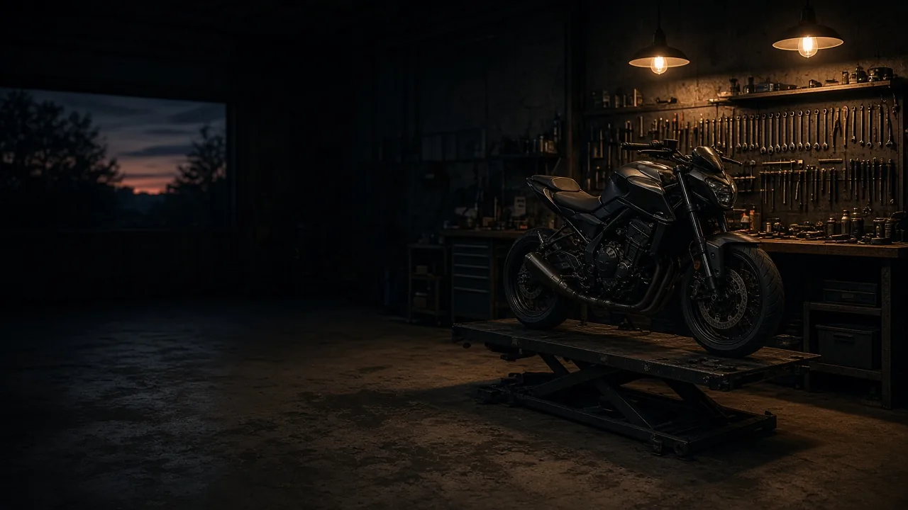

Contact et devis : garage moto à Conflans-Sainte-Honorine
Le plus simple est d’appeler l’atelier pour décrire votre moto et le problème rencontré.
Coordonnées de l’atelier
- Téléphone01 70 82 63 94
- E-mailsportgarage78@gmail.com
- Adresse de l’atelier245 rue de l’Ambassadeur, 78700 Conflans-Sainte-Honorine
Horaires d’ouverture : renseignez-vous par téléphone avant de passer. L’atelier travaille uniquement sur les motos, pas sur les scooters.
Zone d’intervention
Garage moto pour Conflans-Sainte-Honorine et ses alentours
L’atelier est installé à Conflans-Sainte-Honorine (78). Les motards viennent de toute la boucle de Seine, côté Yvelines comme côté Val-d’Oise.
La carte n’a pas pu s’afficher. Zone desservie : Conflans-Sainte-Honorine et les communes listées ci-contre, dans un rayon d’environ 11 km.
Cliquez sur la carte pour activer le zoom à la molette. Repère : centre-ville de Conflans-Sainte-Honorine ; cercle d’environ 11 km.
Atelier
- Conflans-Sainte-Honorine (78)
Yvelines (78)
- Poissy
- Andrésy
- Achères
- Maisons-Laffitte
- Saint-Germain-en-Laye
Val-d’Oise (95)
- Herblay-sur-Seine
- Cergy
- Éragny
Et les communes alentour : appelez l’atelier pour vérifier la prise en charge de votre moto.
Appeler le 01 70 82 63 94